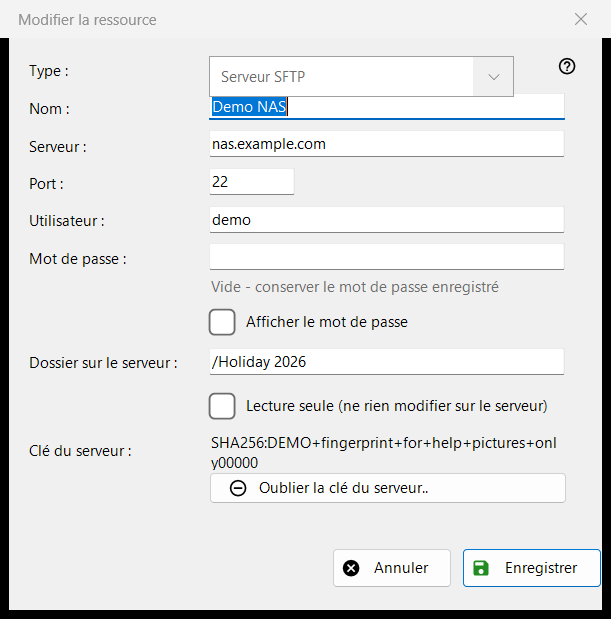
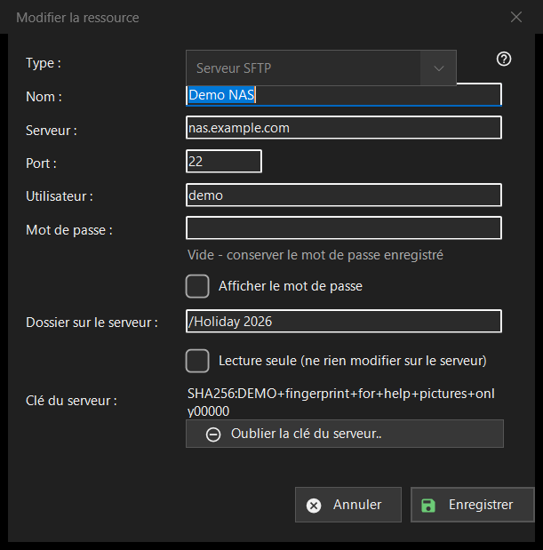

Modifier la ressource
Objectif
Le formulaire d'un serveur ou d'un dossier réseau enregistré. «Ajouter..» dans la liste des ressources l'ouvre vide avec le titre «Nouvelle ressource», «Modifier..» l'ouvre rempli sous le titre «Modifier la ressource», et une adresse sftp:// saisie dans la zone de dossier l'ouvre préremplie.


Dans cet ordre
- Choisissez le type : serveur SFTP ou dossier réseau (SMB).
- Donnez un nom à la ressource et saisissez l'adresse du serveur et le port, ou le chemin réseau.
- Saisissez l'utilisateur et le mot de passe.
- Indiquez le dossier sur le serveur et activez la lecture seule si rien ne doit y changer.
- Appuyez sur «Enregistrer».
Les éléments
Type
«Type :» se choisit à la création de la ressource : «Serveur SFTP» (port 22, dossier /) ou «Dossier réseau (SMB)». Pour une ressource enregistrée, la liste est désactivée, parce que le mot de passe enregistré et la clé du serveur appartiennent à un seul type. Pour SMB, le champ d'adresse s'intitule «Dossier réseau :» et accepte un chemin comme \\server\folder ; les champs du port et du dossier ne concernent que SFTP.
Nom, serveur et port
«Nom :» est ce que montre la liste ; s'il est vide, l'adresse du serveur est utilisée. «Serveur :» est un nom ou une adresse IP et «Port :» un nombre de 1 à 65535. Changer le serveur ou le port supprime les autres adresses venues avec une ressource importée, de sorte qu'un mot de passe enregistré n'aille jamais vers une adresse que vous n'avez pas saisie.
Utilisateur et mot de passe
«Utilisateur :» et «Mot de passe :». Le mot de passe est enregistré chiffré pour votre compte Windows ; la liste ne contient qu'une référence vers lui. Pour une ressource enregistrée, la zone est vide avec l'indication «Vide - conserver le mot de passe enregistré» : ne tapez quelque chose que pour le remplacer. «Afficher le mot de passe» est désactivé au départ. Une nouvelle ressource demande un mot de passe.
Dossier et lecture seule
«Dossier sur le serveur :» est le dossier que le programme ouvre en premier, un chemin commençant par /. «Lecture seule (ne rien modifier sur le serveur)» fait que le programme traite la ressource comme étant en lecture seule : ni déplacement ni copie vers elle, ni suppression ni renommage dans elle.
Clé du serveur
«Clé du serveur :» affiche l'empreinte mémorisée pour ce serveur, ou indique qu'elle apparaîtra à la première connexion, où vous la confirmez. «Oublier la clé du serveur..» n'apparaît que lorsqu'une clé est mémorisée. Le bouton demande d'abord confirmation (la réponse par défaut est Non) et explique : si le serveur a été réinstallé, c'est normal ; sinon, quelqu'un se fait peut-être passer pour lui. Il n'efface que la clé : la connexion suivante affiche la nouvelle empreinte et redemande.
Enregistrer
«Enregistrer» vérifie les champs et nomme le premier problème en rouge sous eux : adresse, port, dossier, nom d'utilisateur ou mot de passe manquant. «Annuler» ferme le formulaire sans changement.